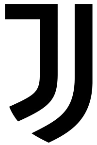
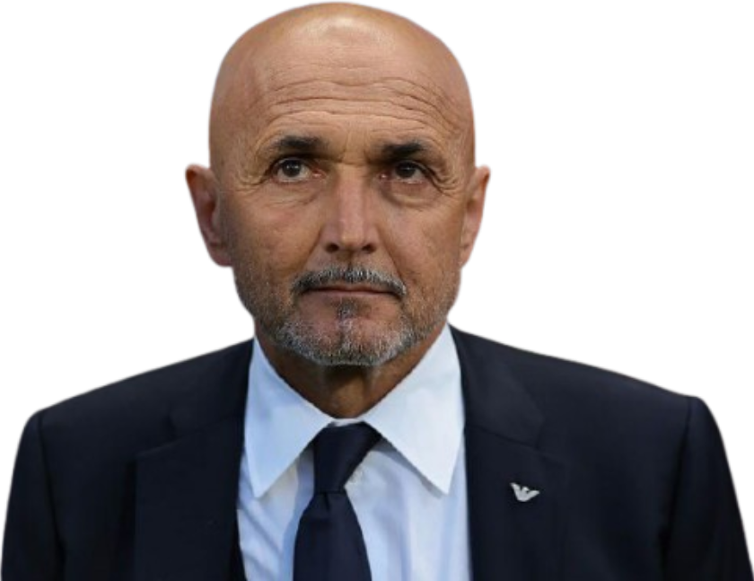
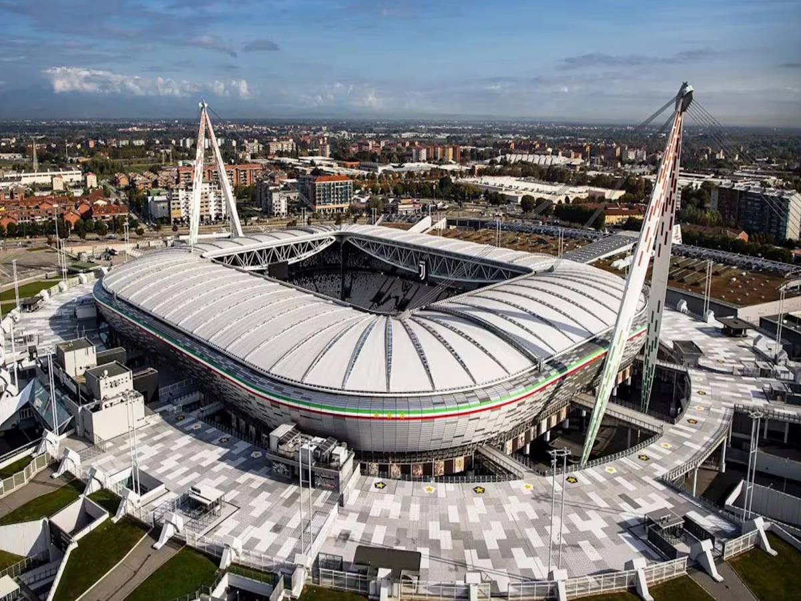

Treinador: Luciano Spalletti
Luciano Spalletti vive hoje um dos capítulos mais inesperados e vitoriosos da sua carreira. Depois de ter conduzido o Nápoles a um título histórico e de uma passagem pela Seleção Italiana, o técnico de 67 anos é agora o rosto da reconstrução da Juventus.

Estádio: Allianz Stadium
Situado em Turim, o Allianz Stadium é muito mais do que um recinto desportivo, é o símbolo máximo da modernidade e da autonomia financeira da Juventus. Inaugurado a 8 de setembro de 2011, marcou um ponto de viragem histórico, tornando a Juve o primeiro grande clube italiano a possuir o seu próprio estádio.

Estilo de Jogo:
Na Juventus, Luciano Spalletti adaptou a sua filosofia ofensiva ao ADN competitivo do clube de Turim, criando uma equipa que equilibra o espetáculo com a solidez necessária para vencer na Serie A.
"Vincere non è importante, è l'unica cosa che conta!"